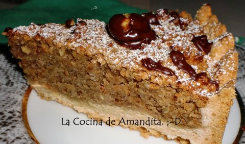

27 recetas de tartas fáciles para tener un fin de semana muy dulce
 El Español
Editar perfil Cerrar sesión Zona Ñ La Edición
Cocinillas
Conoce nuestras newslettersCuenta de usuario
Iniciar sesión / RegistroEditar perfil Cerrar sesión
Editar perfil Cerrar sesión Recetas Carne Pescado y marisco Postres Ensaladas Verduras Pasta y arroz Salsas Sopas y cremas Aprende a cocinar Actualidad gastronómica Restaurantes Vinos Opinión
Premium
Suscríbete Zona Ñ La Edición App iOS App androidServicios
El Tiempo Hemeroteca Temas Newsletters IdealistaEl León de El Español Publicaciones S.A.
Recetas Carne Pescado y marisco Postres Ensaladas Verduras Pasta y arroz Salsas Sopas y cremas Aprende a cocinar Actualidad gastronómica Restaurantes Vinos OpiniónPostres
27 recetas de tartas fáciles para tener un fin de semana muy dulce
Cualquier ocasión es buena para celebrarla con un postre especial y eso no será nada complicado si echamos mano de cualquiera de estas recetas de tartas fáciles.
12 marzo, 2021 20:23 Repostería Tarta Mer Bonilla @MerAQEGLa pandemia que nos llevó a tener que confinarnos en España hace ya un año nos ha sumido en una nueva normalidad en la que estamos limitados a la hora de juntarnos con otras personas para celebrar, pero en vez de quejarnos y sufrir, es bueno seguir aprovechando cada ocasión para celebrar lo que sea, aunque ahora no seamos muchos en la mesa y las risas y felicitaciones solo se puedan compartir por videollamada.
Y qué mejor para celebrar que un postre especial, una receta dulce que podamos preparar sin complicaciones y que siempre salga bien. Es cierto que la repostería deja menos margen a la improvisación que las recetas saladas, pero eso no es un inconveniente, sino que hay que verlo como una ventaja, pues si se sigue la receta al pie de la letra, el éxito está asegurado.
Durante el confinamiento, casi todos aprendimos nuevas recetas de bizcochos, por eso ahora vamos a ir un paso más allá y aprender recetas de tartas fáciles de todo tipo, algunas muy rápidas que se hacen en microondas, otras que no necesitan horno porque se preparan en frío, de manera que solo tengas que elegir la que más te gusta para ponerte manos a la obra.
1 de 27La tarta de queso sin horno más rica y fácil que existe
Es probable que, al ver ese corte que hace que a uno le entren ganas de comerse la pantalla, estéis pensando que conseguir replicar esa imagen en vuestra casa va a ser algo difícil.
Todo lo contrario, es una tarta de queso que no necesita horno y que si la termináis con una mermelada casera como la que también os enseñamos a hacer os va a gustar tanto que la repetiréis muchas veces.
2 de 27Tarta de zanahoria exprés
Una mini tarta de zanahoria de un par de raciones que se hace en un momento en el microondas y ni siquiera hay que esperar a que se enfríe.
Además no lleva azúcares refinados, es baja en carbohidratos y sin gluten.
3 de 27Tarta de queso y naranja
Aprovechando que aún quedan naranjas de temporada y con los restos de masa de una empanada nos marcamos esta tarta de queso y naranja muy fácil de hacer y muy difícil de olvidar de tanto que la vais a disfrutar si la hacéis.
4 de 27Tarta de limón rápida
En menos de un cuarto de hora ya esta lista para que la dejes enfriando.
La combinación del limón con el coco es pura golosina que funciona muy bien como postre o a la hora de la merienda acompañada de alguna infusión-
5 de 27Tarta de cerveza Guinness y chocolate
Dentro de unos días, el próximo 17 de marzo, es San Patricio, patrón de Irlanda y en España cada vez es más frecuente celebrarlo.
Una buena forma de hacerlo es con esta tarta de cerveza Guinness , que para los que no la hayáis probado, ya os adelanto que no sabe a cerveza ni a alcohol, sino que tiene un intenso e irresistible sabor a chocolate.
6 de 27Tarta de Santiago
De América saltamos para aterrizar en Santiago de Compostela y descubrir una de las tartas más famosas e internacionales de la cocina gallega, la tarta de Santiago .
7 de 27Tarta de manzana estilo Apple Pie americana
Son las tartas de manzana de las películas y series americanas. Esas que de pequeños nos cansábamos de ver enfriándose en la ventana y llamando la atención de todo el que pasaba por el delicioso olor que desprende.
8 de 27Tarta de limón sobre torta de aceite
Una tarta en formato individual y un poco tramposilla que copiamos de uno de esos restaurantes que nos gustan. El resultado es una tarta de limón maravillosa .
9 de 27Tarta Tatin de pera con chocolate y almendra
Otra versión deliciosa de la celebérrima tarta Tatin , en esta ocasión la protagonista es la pera acompañada de chocolate, almendras y un toque de pimienta.
10 de 27Tarta de queso al horno
La tarta de queso más clásica , hecha en el horno, muy cremosa pero sin llegar a ser líquida y, por supuesto, deliciosamente adictiva.
11 de 27Tarta de horchata
¿Quién ha dicho que la horchata solo es para bebérsela fresquita en verano? Incluso si no eres muy fan de la bebida, te aseguro que la tarta de horchata te va a encantar en cualquier época del año.
12 de 27Tarta de queso y manzana
Si eres capaz de pelar una manzana ya tienes esta receta de tarta de manzana y queso dominada, porque se hace en el microondas y en escasos 20 minutos está lista.
Eso sí, después hay que ser fuertes y esperar un poco a que se enfríe.
13 de 27Tarta Milhojas
Una de las tartas más habituales de las pastelerías que puedes rellenar con nata, merengue. mousse o tus cremas favoritas.
Siguiendo esta receta conseguirás una tarta milhojas con un hojaldre dorado y crujiente cuyo resultado te sorprenderá.
14 de 27Tarta Tatin de plátano
Cualquier fruta carnosa que no suelte mucha agua es válida para preparar una tarta Tatin.
En esta ocasión os proponemos una versión hecha con plátano , que se puede servir con el típico helado de nata o vainilla, o darle un toque más personal acompañándola de un sirope de chocolate o de un poco de dulce de leche.
EasterBunnyUK (iStockPhoto) 15 de 27Tarta de queso y pan de molde
Que te apetece algo dulce pero no tienes ganas de ponerte a pesar, medir líquidos o tener que hacer mezclas con delicadeza, pues no pasa nada, sacas esta receta de tarta de queso y pan de molde , que lleva unos ingredientes que es fácil que ya tengas en casa, lo metes todo en un recipiente, lo bates con la batidora sin ningún miramiento, lo vuelcas en una fuente preparada para el horno y a esperar a que se haga ella solita.
16 de 27Tarta de chocolate, ron y cerezas
Si buscas un postre que desate pasiones, esta tarta de chocolate con cerezas al ron es el dulce perfecto para dar comienzo a noches inolvidables entre las sábanas
17 de 27Tarta de queso sin horno y sin azúcar
Esta tarta de queso sin horno y sin azúcar es la mejor opción para seguir disfrutando de este postre en esta época del año sin necesidad de morir de calor horneando pasteles.
Con fresas, ahora que empieza la temporada, está buenísima, pero puedes poner en su lugar cualquier otra fruta que te guste.
18 de 27Tarta de mousse de chocolate y frambuesa
De potente chocolate pero con el contrapunto de la frambuesa, esta tarta de mousse es sencilla de hacer, no necesita horno y también se puede congelar.
19 de 27Tarta de queso japonesa
La tarta de queso japonesa es la más ligera y esponjosa, sabe a queso y te la puedes comer con las manos.
20 de 27Tarta de queso vegana
Si te estás preguntando cómo se puede hacer un dulce que recuerde a una tarta de queso, pero que no lleve ningún ingrediente de origen animal, pincha aquí para ver esta receta vegana de cheesecake .
21 de 27Galette de melocotón, romero y lima
Aunque en su origen la galette bretona era una preparación salada de trigo sarraceno que más se parecía a los crepes, a lo largo de la historia ha ido evolucionando hasta ahora ser un nombre relacionado con tartas dulces y saladas cuya base es una masa quebrada que se dobla alrededor de los ingredientes principales como recogiéndolos, quedando un aspecto muy rústico en la preparación.
Sin duda es clave la masa quebrada casera aunque podríamos sustituirla por una ya preparada para ahorrar tiempo siendo siempre conscientes de que perderemos el punto artesano delicioso de una masa quebrada de buena mantequilla, preparada en frío y bien cuidada como la que te proponemos para esta galette de melocotón .
22 de 27Tarta de fresas ligera
Con prácticamente las mismas calorías que un yogur desnatado y una pieza de fruta por porción, te puedes lucir y, de paso, darte un capricho con esta tarta de fresas que no puede ser más ligera.
23 de 27Tarta vegana de melocotón y té matcha
Una receta de tarta de melocotón muy sencilla sin azúcares añadidos, sin lactosa ni gluten, y vegana que, además, sabe a verano.
24 de 27Tarta Selva Negra
Si estás pensando en la tarta Selva Negra que te ponen de menú en los bares o de esas congeladas que te venden en algunas pastelerías, olvídate. Esta tarta no tiene nada que ver con esas planchas insípidas de bizcocho de cacao rellenas de nata vegetal a base de aceite de palma. Esto es la receta de la auténtica tarta Selva Negra que nos trajimos de un famoso curso para aprender a prepararla, el curso que se imparte en el Café Zimmermann de la localidad de Todtmoos.
25 de 27Tarta de queso y Oreo
Sin encender el horno y sin apenas esfuerzo, si eres fan de las famosas galletas de chocolate rellenas de crema esta tarta de queso va a ser una de tus favoritas.
26 de 27Tarta de arroz con leche
Lo que menos nos apetece cuando empieza a hacer buen tiempo es encender el horno. Por eso, hoy os traigo una receta sin horno, deliciosa, con sabor a Asturias y de aprovechamiento. Si, de aprovechamiento porque podemos aprovechar ese resto que nos quedó de arroz con leche para hacer esta tarta .
27 de 27Tarta Bourdaloue de peras con salsa de vino tinto
La Bourdaloue es una tarta clásica de la cocina francesa que consistía en una masa sablée rellena de crema de almendras, peras en almíbar y espolvoreada con macarons triturados.
Nosotros os proponemos un versión de la Bourdaloue moderna usando crema frangipane, que es el resultado de la unión de la crema pastelera y la harina de almendra tradicionalmente usada en postres como el Galette de rois (algo así como el Roscón de Reyes francés), y decorando con almendra laminada y azúcar glass.
omo acompañamiento, huiremos del clásico helado o crema inglesa y optaremos por una salsa de vino tinto que nos dará un toque diferente y lleno de contrastes.
Mer Bonilla 20:23 h.Más en Postres
Banoffee en vasitos, receta paso a paso con fotografías
Chocolate caliente a la taza, receta con fotografías paso a paso
Bizcocho de avellanas y miel, receta para merendar el fin de semana
Tarta helada de limón y leche condensada, tu nuevo postre favorito de verano
contacto Publicidad Branded Eventos Quiénes somos Política de Privacidad Condiciones de Compra Contactar © 2021 El León de El Español Publicaciones S.A. Aviso Legal Política de cookies cerrar